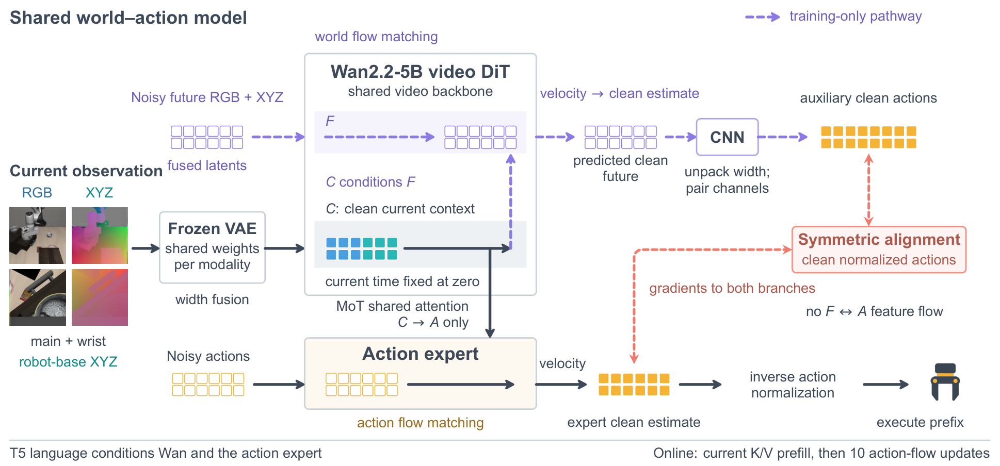
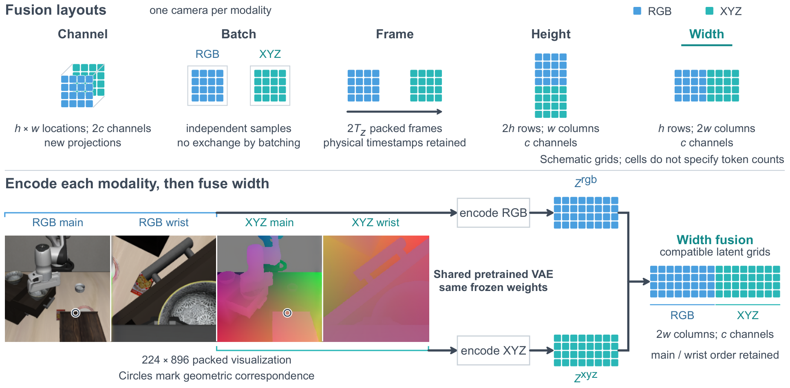
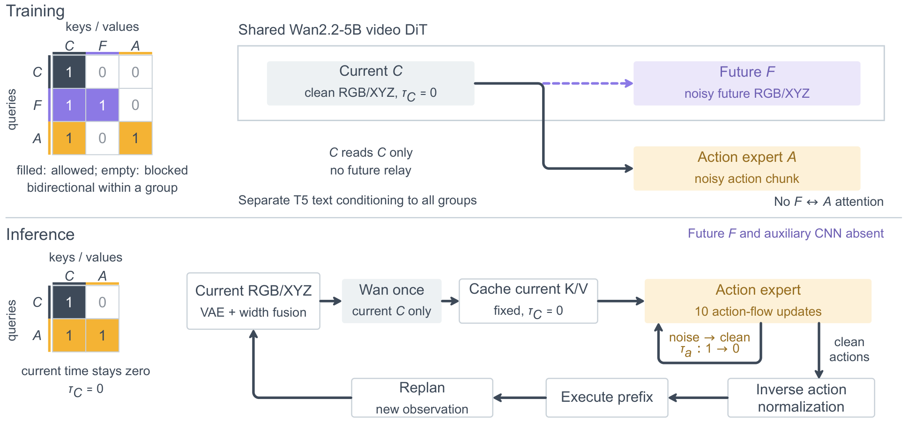

GeoAlign-WAM
A 4D World Action Model for Generalizable and Robust Robot Manipulation Using Video Foundation Prior
Preprint · 2026
Abstract
Video foundation models provide temporal priors for robot manipulation, but plausible image prediction does not explicitly constrain the relationship between scene geometry and Cartesian control. Image pixels identify viewing rays rather than unique metric locations, whereas end-effector commands must resolve spatial relationships in the robot workspace. We present GeoAlign-WAM, a geometry-aware world action model that combines a pretrained video prior with pixel-aligned pointmaps in the robot base frame. RGB and pointmap features are encoded into compatible latent grids and concatenated along the spatial width dimension to jointly represent appearance, three-dimensional structure, and temporal evolution. An action expert predicts executable action chunks from the current multimodal context. A lightweight convolutional head reads the predicted future latent to produce an auxiliary action chunk, and a symmetric geometry–action alignment loss penalizes disagreement between the two predictions. Structured attention prevents the action branch from accessing future tokens, allowing the future-generation branch and auxiliary head to be removed at deployment. GeoAlign-WAM achieves 97.4% success on LIBERO, 81.0% on LIBERO-Plus, 83.1% on LIBERO-Occ, and 84.0% across three real-robot tasks. Compared with Fast WAM, mean success increases by 11.9 percentage points under occlusion and 13.3 points on the real robot. LIBERO-Plus results show substantial gains under camera shifts, although weaknesses remain under some language and lighting perturbations.
Real-World Demos
Simulation Demos
The same manipulation task under a standard scene, a viewpoint shift, and occlusion.
“Pick up the black bowl in the top drawer of the wooden cabinet and place it on the plate.”
Camera Rollouts
4D Reconstructions
The recorded episodes reconstructed from simulator depth, with the robot trajectory.
Selected successful simulation episodes; they do not represent aggregate success rates. The base instruction is shown above; LIBERO-plus also supplies its perturbation suffix to the model.
Future Prediction Visualization
A qualitative comparison of imagined futures and the recorded rollout, including RGB and geometry.
Method
- Robot-frame geometry: RGB observations and pixel-aligned XYZ pointmaps in the robot base frame are encoded into compatible latent grids and fused along the spatial width dimension.
- World and action modeling: a pretrained video backbone learns future RGB and XYZ prediction, while the action expert produces action chunks from the current multimodal context.
- Geometry–action alignment: a lightweight convolutional head reads the clean width-fused future latent directly and predicts an auxiliary action chunk. A symmetric alignment loss penalizes disagreement with the action expert.
Structured attention prevents the action branch from reading future tokens. Deployment uses the current-context action path; future RGB/XYZ generation and the auxiliary head are removed.

RGB–XYZ fusion

Training and deployment attention

Results
Success rates (%) on simulation benchmarks and real-world manipulation tasks.
Real-World Manipulation
Each task is evaluated over 25 trials.
| Method | Pick Cup | Stack Cup | Color Match | Average |
|---|---|---|---|---|
| π0.5 | 64 | 48 | 76 | 62.7 |
| Fast-WAM | 72 | 68 | 72 | 70.7 |
| GeoAlign-WAM | 80 | 84 | 88 | 84.0 |
Averages are unweighted across the three tasks.
LIBERO-Occ
| Method | Spatial | Goal | Object | LIBERO-10 | Average |
|---|---|---|---|---|---|
| Fast-WAM | 74.4 | 73.3 | 67.3 | 69.8 | 71.2 |
| GeoAlign-WAM | 84.3 | 85.2 | 79.3 | 83.7 | 83.1 |
Averages are unweighted across the four suites and rounded to one decimal place.
LIBERO-Plus
GeoAlign-WAM success rates by task suite and perturbation. The Mean row weights the four task suites equally for each condition.
| Suite | Original | Camera | Robot | Language | Lighting | Background | Noise | Layout |
|---|---|---|---|---|---|---|---|---|
| LIBERO-Spatial | 98.1 | 73.4 | 78.3 | 95.5 | 98.0 | 99.4 | 84.3 | 81.8 |
| LIBERO-Object | 98.3 | 94.5 | 71.8 | 98.8 | 100.0 | 95.8 | 97.3 | 72.8 |
| LIBERO-Goal | 96.9 | 95.4 | 89.3 | 58.4 | 63.1 | 98.2 | 89.6 | 59.6 |
| LIBERO-Long | 96.3 | 54.3 | 49.3 | 58.2 | 64.3 | 87.4 | 83.2 | 75.6 |
| Mean | 97.4 | 79.4 | 72.2 | 77.7 | 81.4 | 95.2 | 88.6 | 72.5 |
The equal-weight overall success rate is 81.0% across all 28 suite–perturbation entries (four suites × seven perturbations, excluding Original). It is computed directly from those entries, without rounding the intermediate column means or weighting by episode counts.
Original: unperturbed LIBERO. Camera: viewpoint changes. Robot: initial-state changes. Background: texture changes. Noise: external-camera RGB noise. Layout: object-layout changes. Performance varies across conditions, including lower results for some language and lighting perturbations.
LIBERO
GeoAlign-WAM obtains an average success rate of 97.4% on LIBERO.
BibTeX
@misc{li2026geoalignwam,
title = {GeoAlign-WAM: A 4D World Action Model for Generalizable and Robust Robot Manipulation Using Video Foundation Prior},
author = {Li, Zirui and Yan, Yujie and Tan, Runjia and Yang, Lei
and Ren, Yangang and Liu, Ziwei and Lv, Chen},
year = {2026},
url = {https://lzrbit.github.io/GeoAlign-WAM/}
}